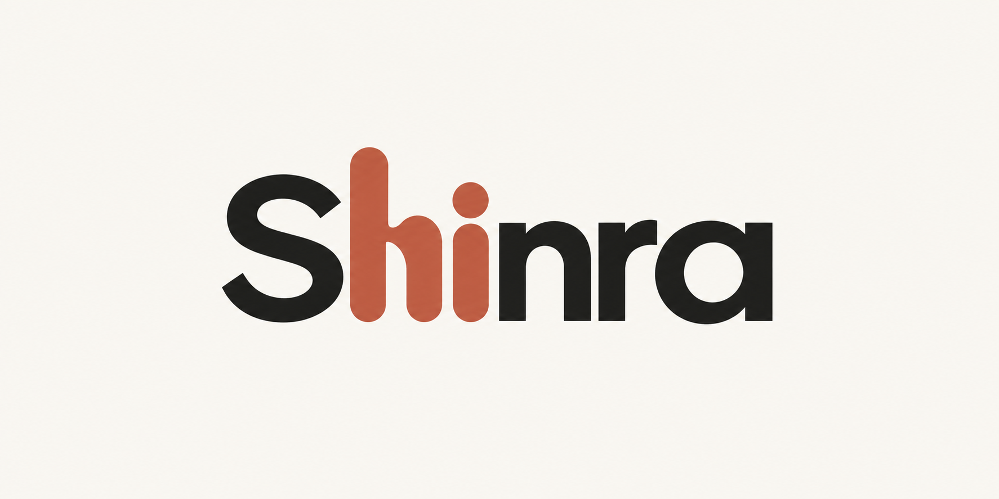
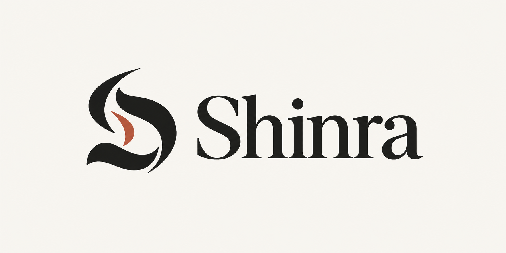
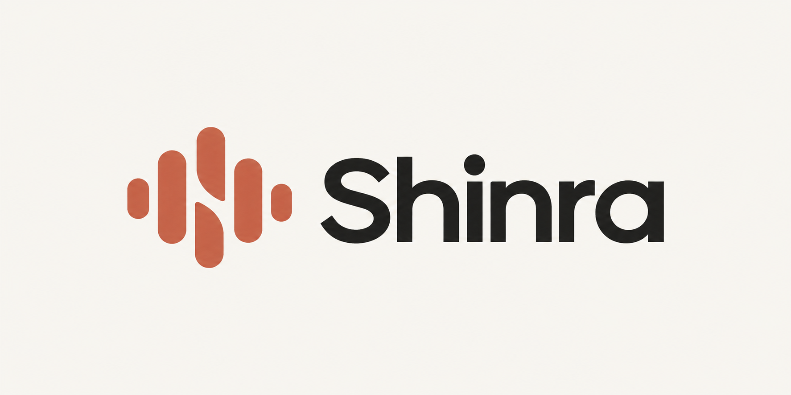
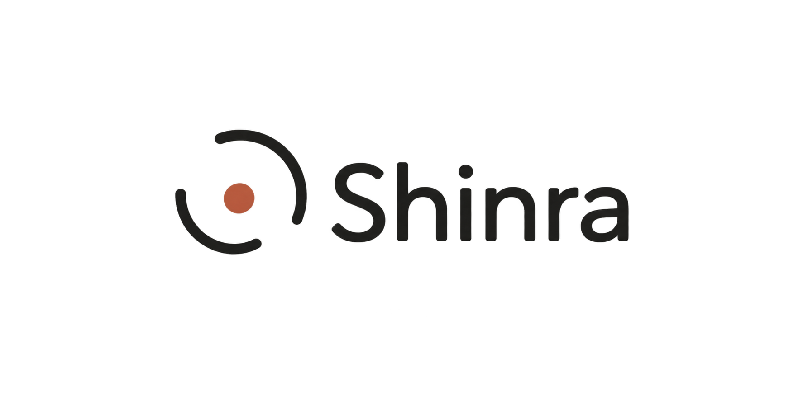
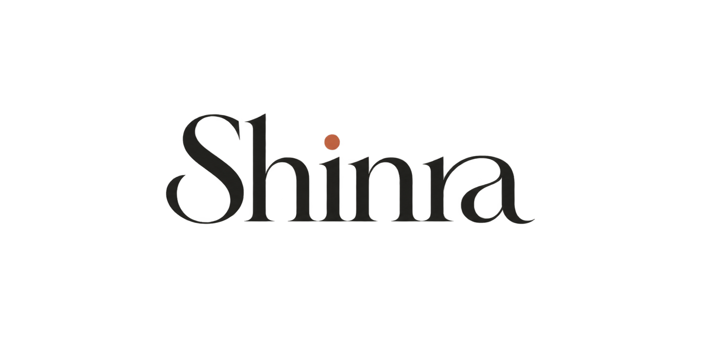

Shinra — Logo Directions
Concept previews only. The app’s logo has not been changed.
New refinement: Wave Lettering
The h and i use rounded terracotta waveform-inspired strokes within the word itself. No separate icon.

1. Sculpted S
Distinctive and editorial.

2. Voice Wave
Friendly, modern, and clearly connected to voice.

3. Listening Halo
Minimal, suggesting listening and presence.

4. Signature Wordmark
Elegant typography with a terracotta accent.
